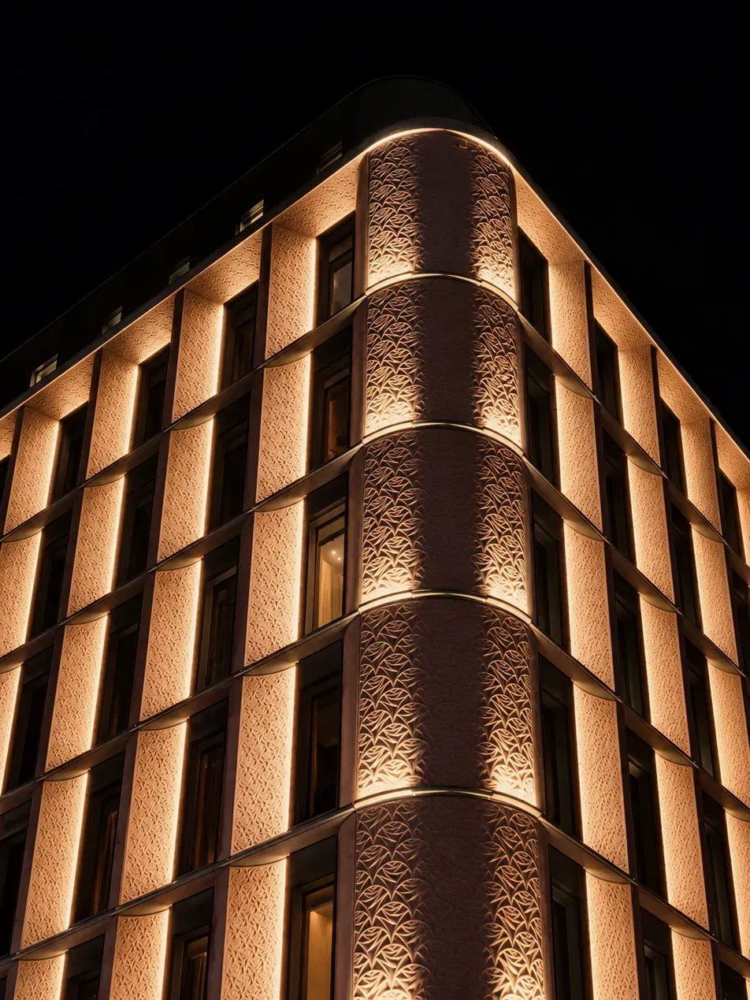

Selective
by Design
Existing urban assets in London and Amsterdam, selected to support long-term ownership.
Investment Parameters
Durable Fundamentals, Defined Potential
Each opportunity is assessed individually against the mandate agreed with the investor, and proceeds only on the investor’s approval.
Existing buildings and defensible occupational demand. For repositioning, business plans driven by specific, controllable improvements.

Income
Durable income with a clear basis in location, asset quality and occupational demand.
Income
Durable income with a clear basis in location, asset quality and occupational demand.
- Income evidenced by occupation, not by forecast
- Lease terms, expiry profile and tenant covenant
- Recurring and near-term capital requirements identified before pricing
- Refinancing capacity and buyer depth at exit
- Reletting cost, void period and landlord obligations at expiry
- Cash flow if reletting takes longer than assumed
- Capital expenditure arriving earlier or larger than assumed
- Buyer depth at exit for an asset of this size and profile

Repositioning
Assets where targeted capital and active oversight can materially improve income or value.
Repositioning
Identify the Opportunity
Identify what is limiting income or value: vacancy, layout, specification, permitted use or operating performance. Reiwa assesses whether the constraint can be resolved, and whether the resulting improvement would be material against the investor’s mandate before any capital is committed.
Shape the Strategy
Assess the works, leasing and operational changes required, together with their costs, permissions, delivery timetable and the risks each carries. Appointed specialists prepare and price the plan, and Reiwa coordinates their input into a single business plan for the investor to approve.
Strengthen the Asset
Strengthen the asset through works and operational change delivered by appointed contractors, letting agents and property managers. Reiwa monitors progress and cost against the approved plan, and reviews the effect on letting prospects, income and exit options against the investment case.
Illustrative view only. Not a Reiwa Capital asset or transaction.
Durable income with a clear basis in location, asset quality and occupational demand.
- Income evidenced by occupation, not by forecast
- Lease terms, expiry profile and tenant covenant
- Recurring and near-term capital requirements identified before pricing
- Refinancing capacity and buyer depth at exit
- Reletting cost, void period and landlord obligations at expiry
- Cash flow if reletting takes longer than assumed
- Capital expenditure arriving earlier or larger than assumed
- Buyer depth at exit for an asset of this size and profile
Identify the Opportunity
Identify what is limiting income or value: vacancy, layout, specification, permitted use or operating performance. Reiwa assesses whether the constraint can be resolved, and whether the resulting improvement would be material against the investor’s mandate before any capital is committed.
Shape the Strategy
Assess the works, leasing and operational changes required, together with their costs, permissions, delivery timetable and the risks each carries. Appointed specialists prepare and price the plan, and Reiwa coordinates their input into a single business plan for the investor to approve.
Strengthen the Asset
Strengthen the asset through works and operational change delivered by appointed contractors, letting agents and property managers. Reiwa monitors progress and cost against the approved plan, and reviews the effect on letting prospects, income and exit options against the investment case.
Illustrative view only. Not a Reiwa Capital asset or transaction.

Selective Hospitality
Operating requirements, local demand and the suitability of the building are considered together as part of the investment assessment.
Building Character
Existing buildings with architectural or locational distinctiveness that an operator cannot replicate elsewhere.
Demand Rooted in Place
Guest or occupier demand tied to the location itself, not dependent on a single brand, event or channel.
A Suitable Operating Model
A lease, management agreement or operating structure that matches the investor’s appetite for operational exposure.